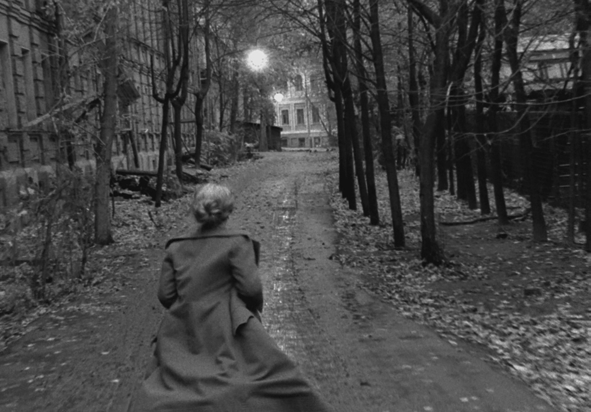

In my opinion, The Mirror is Tarkovsky's magnum opus. A film that transcends story telling, it's a semi-autobiographical film that deals with memories. The film uses non-linear story telling in a way that perfectly grabs the essence of remembering your past. Combined with Tarkovsky's signature distinct visuals, the film is an experience that needs to be rewatched multiple times to grasp.


